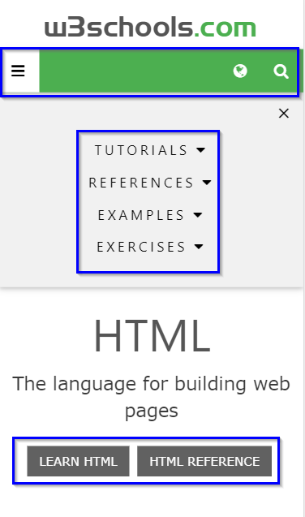
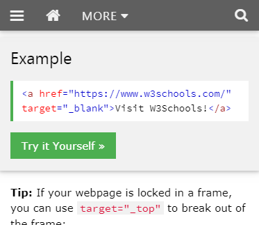

Design - Analysis Assessment
w3schools.com
Design Principles
Proximity — Garrett Bond

The principle of Proximity is defined as grouping similar elements close to e
ach other
so that navigation is easier for the user.
Example: In the above image you can see that w3schools follow this principle for their
overall layout on the front page, within the menu icon, and on the top navigation bar.
Alignment — Gary
The site is straight forward and simplistic. Main nav bar across the top. Detailed navigations directory on the left side top to bottom with content located in the center and on the right below the main nav bar. Logo in top left with catch phase on the top right both in the page header area of the display. Text for navigation list appears to be left justified while that in the column of explanation in an individual row is centered justified. Try It Yourself Self arears are all left justified and all engagement boxes are center justified.
Repetition — Austin

The W3Schools web site has a repetition scheme in both the shaping of the containers and the color theme. By mere observation we can see the containers are mostly square and rectangular, even in their spacing. This makes it easier to navigate through options as well as form a pattern which help point in the right direction. Also, the green color used for boarders and buttons simplify what would have required thorough investigation to recognize. The same style is used for all the text; simple and formal, which is adequately suited for its instructional purpose. This image clearly demonstrates the application of repetition in color scheme and font consistency to create emphasis.
Contrast — Gary
Is established via the use of the minimalistic use of an attention getting green color with another wise plain white background. Text is slightly of black actionable engagement boxes alternate based on purpose between grey and green (green being the try it yourself links and exercises, all other engagement boxes being grey). All engagement boxes are white text on a solid color while main body information text is typically gray. Navigational links on the left are black and those in the nav bar are white on green.
Typography — Franklin
W3schools does a great job of implementing the Typography principle into their overall design. In the following image you can see that various ways they have applied the design.
Site Purpose Statement
To provided interested persons a place to research learn practice, prove, and demonstrate an understanding of web building skills ranging from programming fundamentals to and including entry level skills in web coding and other web related tools such as HTML, CSS, Java Script and a variety of Server side tools.
Target Audience
- Age: 10-60
- Occupation/Skill level: Student, Hobbyist, and Developers"
- Income: 0-50,000
- Other:
Persona
- Name: Bob Smith
- Occupation: Student or New to tech Field
- Primary Device: PC or Internet device
- Quote: I am Bob and I want to learn web based languages and tools.